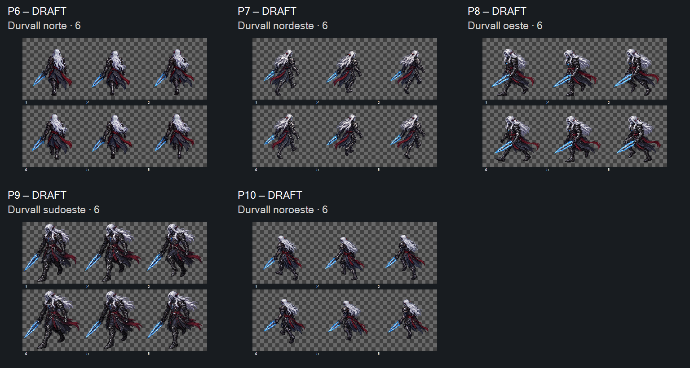

DRAFT, direção visual das cinco revisões aceita em2026-10-17; retenções preservadas. Continuação do piloto M1 v03: P6N, P7NE, P8W, P9SW e P10NW. Cinco folhas3×2 selecionadas em13chamadas. P9v02; demaisv01. Originais e tentativas preservados. Preparação/implementação com Claude em escopo posterior.
Comece comparando identidade, mão da espada e direção nos quadros1/4, depois examine passagem e retorno6→1. Previews5/10FPS para comparar com o piloto anterior, sem alterar temporização no jogo. Canvas de cada célula preservado; sem alinhamento ou escala ocultos. P8tem células515×509 em folha1545×1018, as demais512×512 em1536×1024.
P9 sudoeste RETIDA: a v02 atende à orientação, mas aparenta trocar a espada para a mão direita. v01/v03 conservam a mão esquerda e vieram orientadas para a direita. As três tentativas não resolveram o conjunto; não importar P9, não espelhar para corrigir. Outros grupos exigem alfa/escala/registro/cadência e aceite humano; nenhuma fluidez certificada.
Zero contato alfa≥16 na banda4px das30células. Alfa modal252/253, margens mínimas9..32px entre grupos. Spread da base do núcleo: P6 32, P7 59, P8 14, P9 44, P10 71px. Bbox inclui espada/cabelo/tecido e não prova pivô nem medida anatômica. As prévias iniciais da ferramenta mostraram halo, mas os contatos compostos com alfa não mostram esse fundo; não tratar aquele preview como prova de aura no PNG.
Entrega para Claude · Seleção e origens · Medidas · Tentativas/retenções · 13 prompts · Referências · Controles offline · Integridade/contrato
Recibo do aceite das cinco revisões

O escopo reservado da FILA031/M1 havia ficado fora do índice anterior. Nenhuma implementação, playtest, CANON, commit ou push realizado. Aceite por revisão/hash em visual-acceptance.json; P9 continua retida. Retenções independentes do aceite de direção visual.